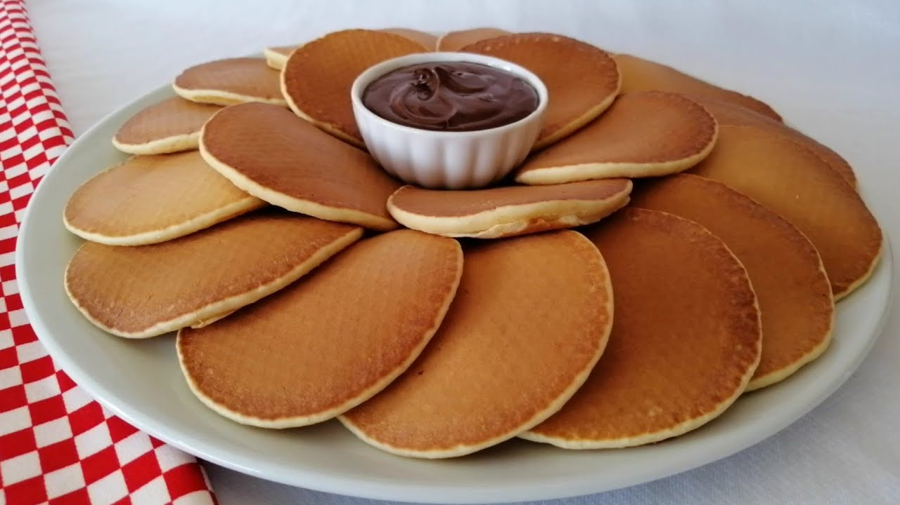

- Pankek Tarifi -

Kahvaltılarınızda severek tüketeceğiniz, reçel, marmelat gibi tatlılarla lezzetlendireceğiniz, kaşık dökmesi
olarak da bilinen ama tatlı olan bir tarif. Çocuklarınız pankek tarifine bayılacaklar. Günümüzde olan pankek
tavaları ile farklı hayvan şekilleri verebileceğiniz böylelikle de çocuklarınızın dikkatini çekecek olan pankek
tarifini mutlaka denemelisiniz.
Tarif:Nefis Yemek Tarifleri
Pankek Tarifi İçin Malzemeler
- 2 adet yumurta
- 2 yemek kaşığı şeker
- 1 su bardağı süt
- 1,5 su bardağı un
- 1 paket kabartma tozu
- 1 paket vanilya
Pişirme aşamasında kullanmak için;
- sıvı yağ
Servis önerisi:
- Kivi, muz, çilek, reçel, bal, çikolata
Pankek Tarifi Nasıl Yapılır?
- Pankek yapmak için öncelikle yumurtalar ve şekeri uygun bir karıştırma kabına alarak iyice çırpalım.
- Süt, un, kabartma tozu, vanilya ilave çırpma teli ile çırpalım. Siz dilerseniz mikser ile de
çırpabilirsiniz. Kek kıvamından biraz daha koyu olacak şekilde hamur hazırlayalım.
- Teflon ya da yapışmaz bir tavaya az sıvı yağı dökelim, fırça yardımı ile her tarafına dağıtalım. Sıvı yağı
az kullanmak pankek yapmanın püf noktalarındandır. Dilerseniz peçete ile de tavaya dağıtabilirsiniz.
- 1 büyük kaşık hamur dökülerek hamurun kendi kendine yayılmasını bekleyelim.
- Üzeri göz göz olmaya başlayan pankeklerimizi spatula yardımı ile ters çevirelim. Diğer taraflarını da
pişirelim.
- Her iki tarafı da pişen pankeklerimizi servis tabağına alalım.
- Üzerine pudra şekeri serpilerek zevkinize göre muz, kivi, çilek, çikolata, bal, sürülebilir çikolata, reçel
ile servis edebilirsiniz.
Afiyet olsun.